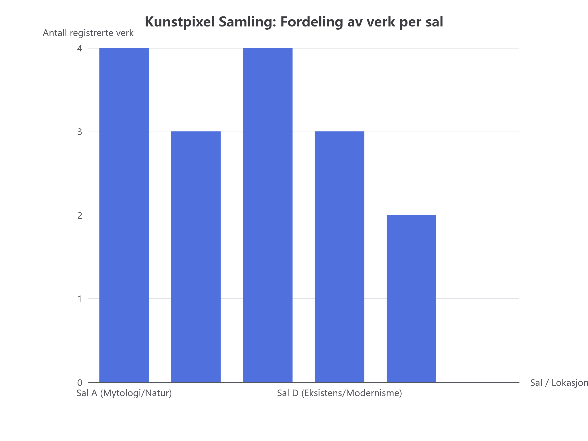

Når bedrifter skal sette KI i drift på egne data, gjør 90 % den samme feilen: De dumper alle data inn i en vektordatabase (RAG) og forventer at språkmodellen skal kunne regne, telle og svare presist. I Kunstpixel har vi valgt en fundamentalt annerledes, profesjonell arkitektur: Relasjonell Sannhetskilde (SQLite) + FastMCP + Persona.
La oss se på den autoritative sannhetskilden i 05_data/museum.db. Vår samling består per nå av:

Figur 1: Ekte fordeling av verk i Kunstpixels saler hentet direkte via SQLite og ECharts.
| Lokasjon (Sal ID) | Navn og tema | Antall verk | Hvorfor RAG feiler her |
|---|---|---|---|
SAL-A |
Mytologi og natur (Kittelsen m.fl.) | 4 | Hvis du spør en vektorbase: "Hvor mange verk har vi i Sal A?", vil den hente ut chunker basert på likhet, ikke utføre en deterministisk COUNT(*). Modellen gjetter. |
SAL-B |
Realisme og samfunn (Krohg m.fl.) | 3 | Vektorsøk kan miste et verk fordi teksten i verkskortet lignet mindre på prompten enn de andre. |
SAL-C |
Lys, farge og interiør (Backer m.fl.) | 4 | Eksakt telling krever relasjonsintegritet, ikke kosinuslikhet. |
SAL-D |
Eksistens og modernisme (Munch m.fl.) | 3 | Her henger "Skrik" og "Madonna". Publikum krever 100 % korrekt rom-angivelse. |
MAG-1 |
Magasin 1 (Klimastyrt lager) | 2 | Verk som ikke er utstilt. Skal verten henvise folk hit? Nei! |
SAL-E |
Temporær utstilling | 0 | En vektorbase "vet" ikke at et tomt rom har 0 verk — den prøver å finne noe som matcher. |
Når du skal designe et KI-system eller forklare det til andre, deler vi problemet i to:
Domenet til databasen og koden.
SAL-D.16.100 kr.Ja/Nei.Regel: KI-en har ALDRI lov til å gjette på fasit. Den MÅ kalle et FastMCP-verktøy.
Domenet til språkmodellen og personaen.
Regel: KI-en bruker sin språklige intelligens til å formidle fasiten vakkert og pedagogisk.
I Kunstpixel har vi koblet dette sammen med FastMCP (Model Context Protocol). Agenten har ikke rå SQL-tilgang (det ville vært en sikkerhetsrisiko og skapt ustabilitet). I stedet har den spesialiserte verktøy:
# Fra src/mcp_server.py
@mcp.tool()
def search_collection(query: str = "", room_id: str = ""):
"""Søker autoritativt i samlingen med ferdig indekserte filtre."""
...
@mcp.tool()
def get_room_artworks(room_id: str):
"""Returnerer verk i kuratert rekkefølge for en spesifikk sal."""
...Når en bruker spør: "Hva kan jeg se i Sal C?" skjer følgende:
get_room_artworks(room_id="SAL-C") deterministisk over FastMCP.mode=ro.Hva er det mest presise faglige svaret du gir?
Primærkilde for fordypning: Les 00_felles/FORMAAL.md og src/mcp_server.py i Kunstpixel-katalogen.
Still gjerne oppfølgingsspørsmål direkte til agenten i chatten!